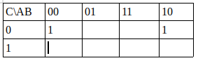
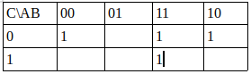
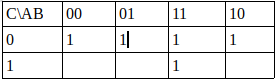

Karnaugh maps are methods we use to simplify a boolean algebraic expression.
They need to be written in a certain way to get the value. The map needs to contain every possible value for the values.
A and B both have the total possible values of 1 and 0 by themselves. When together they have 00, 01, 11, 10. Notice
that these numbers are not in order? Karnaugh maps must have it in this particular order to work.
.
Once you have laid out your map, you fill in the blanks by writing a 1 in every box where the question is true, and 0 where false.
After this draw boxes (size of 1, 4, 9 ect..) if you cannot do a box, draw rectangles of 1xlength round true statements.
After this, check where the boxes lie on the map. Write down all the statements where it is true and cancel out what isn't needed.
The key to this is practice
Example:
1)Simplify the boolean expression ¬(¬((A^B))v(¬B^¬C) v¬C)
This looks disgusting so we will use DeMorgan's laws to cancel out the ¬
((A^B))v¬(B^C)v¬C
We then want to seperate the ^ and v with brackets. I find this is easier to plot on the map. It is already written well here.
Plot each true bit on the map. Below shows Not B and C
(That is not a 1 in the (00,1) box. That is the cursor)
We then plot in a AND B
Finally plot not C
We draw round the boxes to get each of them. We will see that NOT C is a major part, and A^B is a major part.
We put these together to get an answer of: (A^B)v¬C